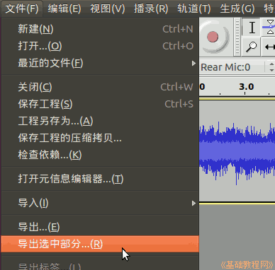

Audacity 音频编辑器教程
作者：TeliuTe 来源：基础教程网
五、截取音乐 返回目录 下一课用鼠标拖动可以选取一段音乐，然后点菜单“文件—导出选中部分..“命令保存；
1、截取音乐
1）启动 Audacity，点菜单”文件—打开“命令，打开一个音频文件，本课有练习文件(下载)；
2）音乐有6秒钟，用鼠标从2秒拖动到大约4秒，在中间波形靠着标尺的位置拖，便于看准上面的时间；
3）点菜单“文件—导出选中部分..”，以 a5 为文件名，格式用默认，保存到自己的文件夹；

2、精确截取音乐
1）在窗口下边状态栏中，找到“选段”标记，里面包括起点、终点设置，也可以用起点和长度搭配；
2）打勾选段里的“吸附到”选项，在起点的“秒”里，点第二个0变白，输入2，从第2秒开始选，
再在结束下边点秒里的第二个0变白，输入4，到第4秒结束，上面波形精确选中2~4秒选段；
3）注意在时、分、秒里点击后，变白就可以输入一个数字了，帧是更精确的单位；
4）同样点菜单“文件—导出选中部分..”，保存一下文件，如果以后还要处理文件，再点菜单“文件－保存”命令保存一下工程；
本节学习了截取音乐的基础知识，如果你成功地完成了练习，请继续学习下一课内容；
本教程由86团学校TeliuTe制作|著作权所有
基础教程网：http://teliute.org/
美丽的校园……
转载和引用本站内容，请保留版权信息和本站链接。